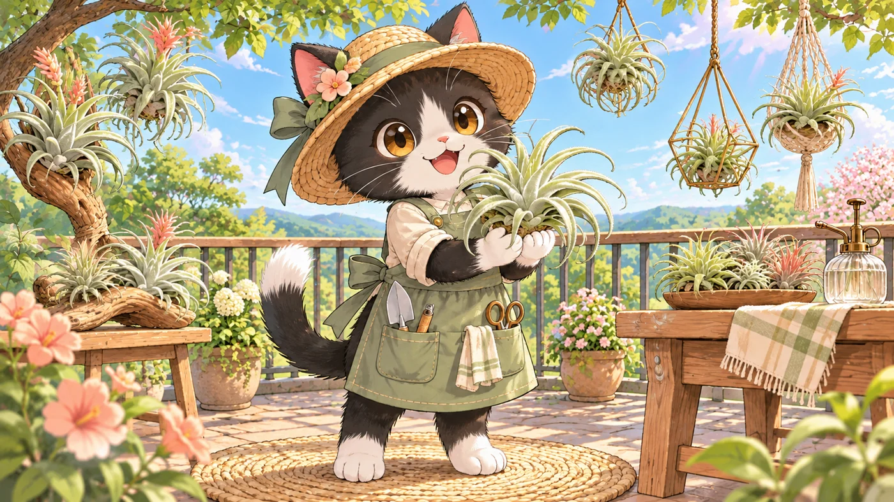

<!doctype html><html lang="zh-Hant"><meta charset="utf-8"><meta name="viewport" content="width=device-width,initial-scale=1"><meta name="theme-color" content="#3e6653"><title>幸福貓・空鳳小學堂</title><style>
:root{--ink:#294b3e;--green:#426b53;--paper:#faf8ef;--muted:#718174}*{box-sizing:border-box}body{margin:0;background:var(--paper);color:var(--ink);font:16px/1.7 system-ui,-apple-system,'Noto Sans TC',sans-serif}button{font:inherit;cursor:pointer}button:focus-visible{outline:3px solid #cc964c;outline-offset:4px}header{max-width:1280px;margin:auto;padding:23px 5%;display:flex;align-items:center;justify-content:space-between;border-bottom:1px solid #dce2d5}.brand{font-size:19px;font-weight:800;letter-spacing:2px}.brand small{display:block;font-size:10px;letter-spacing:3px;color:var(--muted)}.tag{font-size:12px;border:1px solid #cad5c8;padding:5px 13px;border-radius:30px}.wrap{max-width:1180px;margin:38px auto;padding:0 25px}.eyebrow{font-size:12px;letter-spacing:3px;color:#7b8973;font-weight:700}h1{font-size:clamp(32px,4.5vw,56px);line-height:1.35;letter-spacing:2px;margin:14px 0 20px}h2{font-size:28px;line-height:1.5;margin:12px 0}.hero{display:grid;grid-template-columns:.88fr 1.12fr;gap:46px;align-items:center}.hero p{color:#728071;max-width:410px}.art{position:relative}.art img{width:100%;display:block;border-radius:150px 150px 24px 24px;aspect-ratio:1/1.08;object-fit:cover;object-position:49% center}.bubble{position:absolute;bottom:23px;left:20px;right:20px;background:#fffffff0;padding:15px 20px;border-radius:16px;font-size:14px;box-shadow:0 5px 25px #293a2912}.primary{background:var(--green);color:white;border:0;border-radius:12px;padding:15px 28px;font-weight:700;box-shadow:0 5px 0 #294a38;transition:transform .2s}.primary:hover{transform:translateY(-2px)}.textbtn{border:0;background:none;color:var(--green);padding:13px;text-decoration:underline;text-underline-offset:5px}.facts{display:flex;gap:24px;font-size:12px;margin-top:28px;color:var(--muted)}.chapterbar{display:flex;justify-content:space-between;align-items:center;margin-bottom:18px}.dots{display:flex;gap:6px}.dot{width:22px;height:5px;background:#dce2d5;border-radius:8px}.dot.done{background:#568367}.game{display:grid;grid-template-columns:1fr 1fr;gap:34px}.scene{position:relative}.scene img{width:100%;height:460px;object-fit:cover;border-radius:24px}.scene-label{position:absolute;top:20px;left:20px;background:#faf8efed;border-radius:24px;padding:6px 16px;font-size:13px}.card{background:#fffef8;border:1px solid #e1e6d9;border-radius:24px;padding:30px}.hint{color:var(--muted);font-size:14px}.options{display:grid;gap:11px;margin-top:24px}.option{display:flex;align-items:center;text-align:left;gap:14px;background:#fafbf5;border:1px solid #dce3d6;border-radius:13px;padding:15px;color:var(--ink);transition:.15s}.option:hover:not(:disabled){background:#edf3e6;transform:translateX(3px)}.option b{border:1px solid #cdd8c7;border-radius:8px;min-width:30px;text-align:center;font-size:13px}.option.correct{background:#e5f1df;border-color:#80a475}.option.wrong{background:#fff0e8;border-color:#c9967b}.option:disabled{cursor:default;color:var(--ink);opacity:1}.feedback{margin-top:18px;background:#eff4e8;border-radius:13px;padding:17px;font-size:14px}.feedback strong{display:block;margin-bottom:5px}.feedback p{margin:0 0 15px}.bottom{margin-top:45px;padding:23px 0;border-top:1px solid #dce2d5;display:flex;justify-content:space-between;font-size:12px;color:#83907e}.book{display:grid;grid-template-columns:repeat(3,1fr);gap:17px;margin-top:30px}.book article{background:white;border:1px solid #e1e6d9;border-radius:18px;padding:21px}.book h3{margin:0 0 9px;font-size:17px}.book p{font-size:14px;color:#718174;margin:0}.result{text-align:center;max-width:700px;margin:45px auto}.medal{font-size:65px}.score{font-size:55px;font-weight:800}.reward{margin:24px 0;padding:22px;background:#f3ecd7;border:1px solid #dacda6;border-radius:18px;text-align:left}.reward h3{margin:0 0 10px;font-size:21px}.reward p{margin:8px 0;color:#52634b;font-size:14px}.reward ol{padding-left:22px;font-size:14px}.reward li{margin:8px 0}.note{font-size:12px;color:#83907e;margin-top:20px}.fade{animation:enter .35s ease}@keyframes enter{from{opacity:0;transform:translateY(8px)}to{opacity:1;transform:none}}@media(max-width:760px){header{padding:17px 22px}.tag{font-size:10px}.wrap{margin:25px auto;padding:0 20px}.hero,.game{grid-template-columns:1fr;gap:25px}.hero .art{grid-row:1}.hero .art img{height:300px;aspect-ratio:auto;border-radius:90px 90px 20px 20px}.hero h1{font-size:35px}.hero p{max-width:none}.facts{margin-top:22px}.scene img{height:250px}.card{padding:23px}.book{grid-template-columns:1fr}.bottom{gap:16px}.dot{width:16px}h2{font-size:25px}}
@media(prefers-reduced-motion:reduce){*{animation:none!important;transition:none!important}}
</style><header><div class="brand">幸福貓 <small>AIR PLANT LITTLE SCHOOL</small></div><span class="tag">一隻貓，陪你學會養空鳳</span></header><main class="wrap" id="app"></main><script>
const lessons=[
['入住新家','植株應該放在哪裡？','豬五花正在替空鳳找新家，幫牠選個舒服的位置吧！',['密閉的玻璃罐裡','有明亮散光的通風處','陰暗的櫃子裡'],1,'選擇散光、通風的位置。空氣流動能幫助澆水後乾燥，避免長時間悶濕；空鳳也需要充足光線。','🍃'],
['澆水時刻','什麼時候澆水比較合適？','季節不同，澆水時間也要跟著調整喔。',['夏天正午最熱的時候','冬天傍晚或清晨；夏天傍晚後','任何時候都一樣'],1,'本學堂的管理方式：冬天傍晚或清晨、夏天傍晚後澆水。仍需考量溫度與通風；寒冷潮濕時避免讓植株整夜濕著。','🌙'],
['追光日常','空鳳喜歡什麼樣的陽光？','豬五花拉開窗簾，哪一種光線最適合新手？',['全天烈日直曬','完全沒有自然光','明亮散光、溫和斜射陽光'],2,'以明亮散光、溫和斜射陽光為起點，再依品種與環境調整。避免突然移到強烈日照下，尤其是剛澆水後。','☀️'],
['補水練習','要怎麼幫空鳳澆水？','拿起噴霧罐，幫葉子喝口水吧！',['噴灑葉片表面，均勻噴濕','只噴一下空氣就好','把水一直留在葉心裡'],0,'用噴霧罐將葉片表面均勻噴濕。澆水後瀝掉多餘水分，放在通風處乾燥，避免葉心長時間積水；頻率需看乾燥速度調整。','💧'],
['泡澡疑問','空鳳可以泡水嗎？','豬五花拿出小水盆，想先聽聽你的建議。',['每天泡一整晚','建議以噴霧為主','永遠泡在水裡'],1,'本學堂建議新手以噴霧為主，較容易觀察與管理。泡水並非一律不行，但要依品種、缺水狀況與乾燥條件判斷，不能長期浸泡。','🫧'],
['營養補給','空鳳需要施肥嗎？','肥料不是越多越好，該怎麼選？',['每天噴濃肥','直接把肥料粉撒在葉上','可薄肥，每 1–2 週一次'],2,'可依生長狀況每 1–2 週施一次薄肥，依適用肥料標示稀釋；避免過濃、頻繁施用或在葉面留下沉積物。狀態不佳或生長緩慢時可暫停。','🌱'],
['花開之後','空鳳會開花嗎？','葉叢裡冒出小花苞！接下來會發生什麼事？',['會；之後可長側芽，母株逐漸衰老','不會，空鳳只有葉子','開花後整株立刻死亡'],0,'會開花！母株通常只開花一次，花期前後可長出側芽，之後逐漸衰老、枯萎，並非開完就立刻死亡。側芽會接續成長。','🌸'],
['開箱第一天','剛收到植株，該怎麼做？','包裹到了！先讓旅途中的空鳳好好適應。',['立刻施濃肥並曬大太陽','散光通風放 1–2 天，確認正常再澆水','留在封好的紙箱裡一週'],1,'先拍照記錄到貨狀態，放散光通風處約 1–2 天；確認植株無異常後，再恢復正常澆水。若有疑慮先聯絡賣家，也能減少買賣爭議。嚴重缺水等特殊狀況需另行判斷。','📦'],
['辦公室生活','可以放在辦公室養嗎？','豬五花想帶一顆空鳳去上班，哪種環境才適合？',['只要有冷氣就一定可以','有正常光線與通風，才適合長期養護','沒有窗戶的暗角也沒問題'],1,'可以，但要有足夠光線與通風。缺乏正常光線時，植株會逐漸衰弱；室內照明不一定足夠，需評估明亮窗邊或合適的植物燈，也留意空調造成的乾燥。','🏡']
];
function reward(full=false){return `<aside class="reward"><div class="eyebrow">${full?'PERFECT SCORE · 9 / 9':'PERFECT SCORE REWARD'}</div><h3>🎁 ${full?'滿分達成！':'滿分挑戰獎勵'}小精靈一顆</h3><p>${full?'請截圖保存此滿分結果，並傳給小編。':'九題全部答對，截圖傳給小編，就能獲得下次社團購買的贈禮資格！'}</p><ol><li>取得 <strong>9 / 9 滿分</strong>，將滿分結果截圖傳給小編。</li><li>下次購買<strong>社團植株</strong>，且訂單有效成立。</li><li><strong>完成付款後</strong>，再次貼上滿分截圖並告知小編，即贈送<strong>小精靈一顆</strong>。</li></ol><p><strong>每個臉書帳戶限定領取一次。</strong></p></aside>`}
const sceneAlts=['豬五花在通風陽台的層架上安置空鳳','豬五花在夏日傍晚後準備替空鳳澆水','豬五花在戶外遮陰處觀察散光與溫和斜射光','豬五花用噴霧罐均勻噴濕空鳳葉片','豬五花思考泡水與噴霧的選擇','豬五花用少量肥料稀釋成薄肥','豬五花欣賞開花並長出側芽的空鳳','豬五花拆開植物包裹並檢查植株','豬五花在戶外陽台辦公桌旁照顧空鳳'];
let index=0,answers=[],mode='home';const app=document.querySelector('#app');
function footer(){return '<footer class="bottom"><span>幸福貓・把養植物，變成每天的小幸福。</span><span>9 個情境 · 約 3 分鐘</span></footer>'}
function home(){mode='home';app.innerHTML=`<section class="hero fade"><div><div class="eyebrow">HAPPY CAT · GROW WITH LOVE</div><h1>和豬五花一起，<br>養出綠色小日常。</h1><p>空氣植物不用土，那需要什麼呢？<br>跟著黑白貓豬五花走進陽台花園，從九個生活情境裡，一步步成為空鳳的好夥伴。</p><div style="margin-top:30px"><button class="primary" onclick="start()">開始養護冒險　→</button><button class="textbtn" onclick="book()">翻翻養護筆記</button></div><div class="facts"><span>✦ 不用安裝</span><span>✦ 答錯也能學習</span><span>✦ 收集養護徽章</span></div></div><div class="art"><div class="bubble">「喵～我是豬五花！一起幫空鳳找到喜歡的生活吧。」</div></div></section>${reward()}${footer()}`} 
function start(){index=0;answers=[];mode='game';render();window.scrollTo(0,0)}
function render(){const q=lessons[index];app.innerHTML=`<div class="fade"><div class="chapterbar"><button class="textbtn" onclick="home()">← 回到小屋</button><div class="dots" aria-label="第 ${index+1} 題，共 9 題">${lessons.map((_,i)=>`<span class="dot ${i<=index?'done':''}"></span>`).join('')}</div><span class="hint">${String(index+1).padStart(2,'0')} / 09</span></div><section class="game"><div class="scene"><span class="scene-label">${q[6]} ${q[0]}</span><div class="bubble" id="speech">「${q[2]}」</div></div><div class="card"><div class="eyebrow">MISSION ${String(index+1).padStart(2,'0')}</div><h2>${q[1]}</h2><p class="hint">選出你會採取的行動</p><div class="options">${q[3].map((o,i)=>`<button class="option" onclick="choose(${i})"><b>${'ABC'[i]}</b><span>${o}</span></button>`).join('')}</div><div id="feedback" aria-live="polite"></div></div></section></div>${footer()}`}
function choose(n){if(answers[index]!==undefined)return;answers[index]=n;const q=lessons[index],ok=n===q[4];document.querySelectorAll('.option').forEach((b,i)=>{b.disabled=true;if(i===q[4])b.classList.add('correct');else if(i===n)b.classList.add('wrong')});document.querySelector('#speech').textContent=ok?'「喵！這樣空鳳會很開心喔！」':'「沒關係，我們一起記住這個小訣竅！」';document.querySelector('#feedback').innerHTML=`<div class="feedback"><strong>${ok?'✦ 太棒了，答對了！':'🍃 再學會一個小知識！'}</strong><p>${q[5]}</p><button class="primary" onclick="next()">${index===8?'領取我的徽章':'下一個任務'} →</button></div>`}
function next(){if(answers[index]===undefined)return;if(index<8){index++;render()}else result()}
function result(){mode='result';const score=answers.filter((a,i)=>a===lessons[i][4]).length;app.innerHTML=`<section class="result fade"><div class="eyebrow">ADVENTURE COMPLETE</div><div class="medal">${score===9?'🏆':'🌿'}</div><h1>${score===9?'空鳳養護小達人':'空鳳的暖心夥伴'}</h1><div class="score">${score}<span style="font-size:20px;color:#83907e"> / 9</span></div><p>九個任務完成！謝謝你陪豬五花照顧空鳳。<br>把今天學到的事，帶進每天的綠色生活吧。</p>${score===9?reward(true):'<p class="hint">再挑戰一次拿滿分，就能解鎖小精靈贈禮資格！<br>每個臉書帳戶限定領取一次，詳見首頁活動說明。</p>'}<button class="primary" onclick="book()">查看養護筆記 →</button><button class="textbtn" onclick="start()">再玩一次</button></section>${footer()}`}
function book(){const had=answers.length===9;mode='book';app.innerHTML=`<div class="fade"><button class="textbtn" onclick="${had?'result()':'home()'}">← ${had?'返回學習成果':'回到小屋'}</button><div class="eyebrow" style="margin-top:20px">LITTLE GROWING NOTES</div><h1 style="font-size:36px">豬五花的養護筆記</h1><p class="hint">把九個小訣竅收藏在心裡，陪空鳳慢慢長大。</p><div class="book">${lessons.map((q,i)=>`<article><div class="eyebrow">${q[6]} LESSON ${i+1}${had?(answers[i]===q[4]?' · ✓ 答對':' · 再複習'):''}</div><h3>${q[0]}</h3><p>${q[5]}</p></article>`).join('')}</div><p class="note">本遊戲依幸福貓提供的養護方式設計，作為入門參考；不同品種、季節、溫濕度與栽培環境，需調整管理方式。</p><button class="primary" onclick="start()">${had?'重新挑戰':'準備好了，開始冒險'} →</button></div>${footer()}`;window.scrollTo(0,0)}home();
</script></html>
